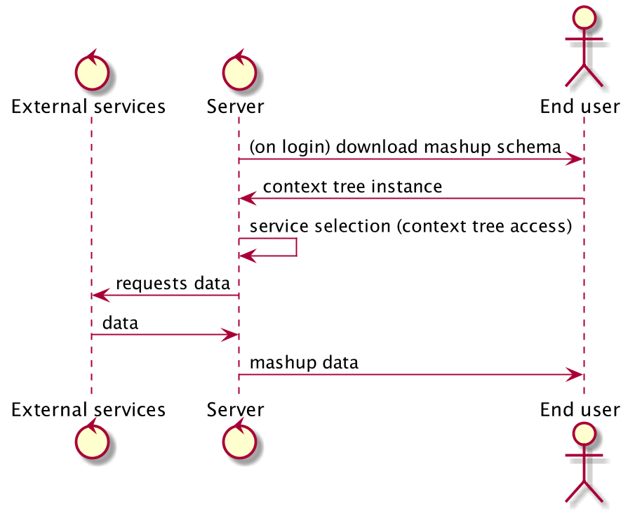
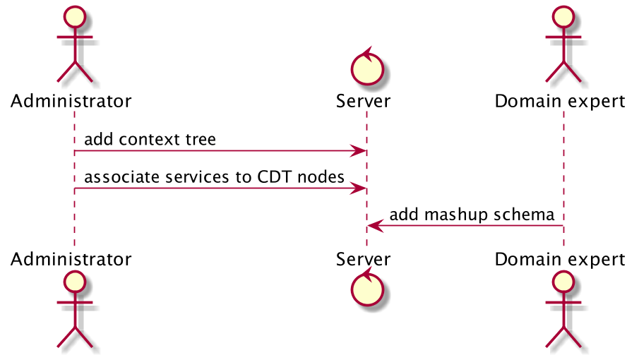

Created: 2016-10-23 Sun 22:53
Bridging the best of two worlds:
Design-time representation of the possible situations of use.
where \tikz{\fill[black] (0,0) circle[radius=.5ex]} is called dimension, \tikz{\draw (0,0) circle[radius=.5ex]} is called concept1 and \tikz{\draw[thick,double] (0,0) circle[radius=.5ex]} is called parameter.
Example of \(t_u\):
{
interest: "restaurant.veggie",
position: (43.1, 12.1),
time: "noon"
}
Two tier architecture to optimize bandwidth usage.

The principal purpose of the system is to provide a way to map \(t_u\) to an ordered set of queries to services needed to satisfy the original goal:
They are queried to fulfill the original intent of the user (\(t_u\)).
CONTEXT SERVICES time = noon, veggieapi.com interest = restaurant => places.com?type=veg restaurant = vegetarian thefork?type=veggie
Each enum's leaf \(L\) has a set \(O_L\) of operations associated with it. Each operation describes a request template to a service \(s\). E.g:
All the possible operations in the system belong to the service repository \(O\):
The mapping is done by categorizing leafs parents as:
position)vegetarian : restaurant is present, it excludes all other restaurant types).They provide the user with additional useful information
CONTEXT SERVICES time = evening, maps.google.com interest = restaurant => restaurantreviews.com restaurant = vegetarian uber.com
Can be accessed either via deep-linking or web-linking.
Example:
CONTEXT MASHUP (DETAILS) ... name: text interest = restaurant => address: text ... (long, lat): map
executeQuery(id: "56975a1bd5704e0d0d815869", t_u) { shape }
where t_u is a json-like representation of \(t_u\), while
shape describes the data set needed:
primaryResults { edges { node { title, address, telephone, website } } }
class App extends Component { render() { return ( <TabBarIOS> <TabBarIOS.Item title="React Native" selected={true}> <NavigatorIOS initialRoute={{ title: 'React Native' }} /> </TabBarIOS.Item> </TabBarIOS> ); } }
